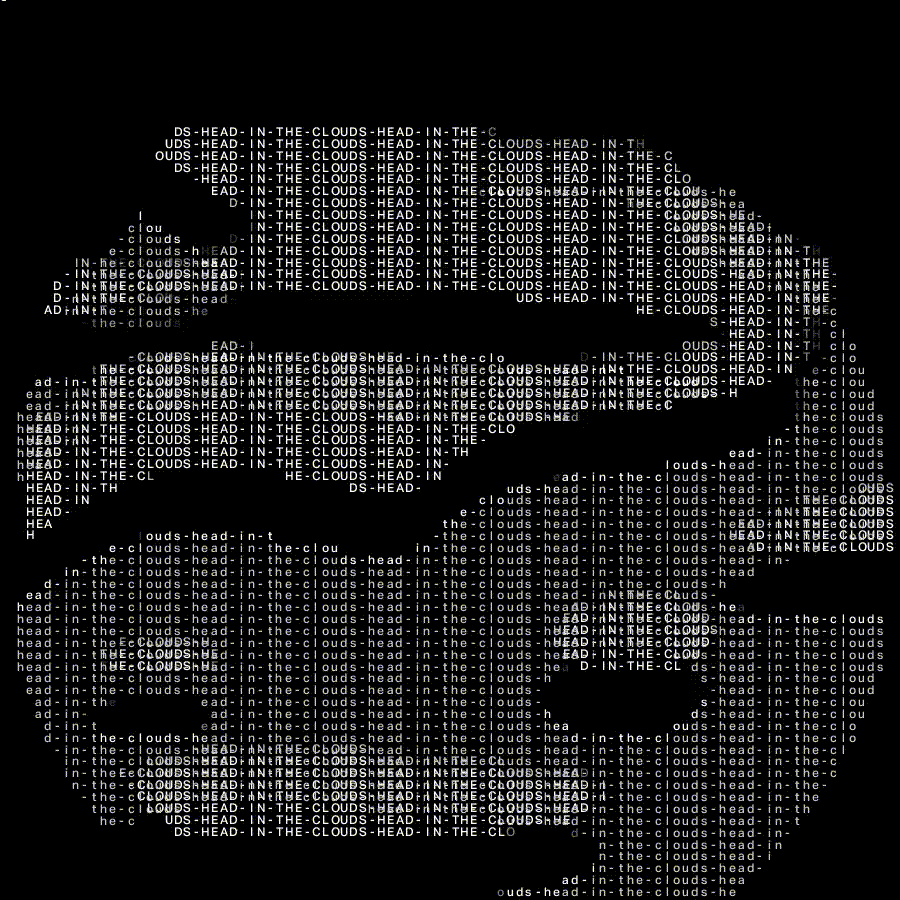

Кандзи (漢字, букв. «Буквы (династии) Хань») — китайские иероглифы, используемые в японской письменности в основном для записи имён существительных, основ глаголов и прилагательных, а также японских имён собственных. Первые китайские тексты были завезены в Японию буддийскими монахами из корейского королевства Пэкче в V веке н. э. Сегодня наряду с исконно китайскими иероглифами используются знаки, изобретённые в самой Японии: так называемые кокудзи.
В зависимости от того, каким путём кандзи попал в японский язык, иероглифы могут использоваться для написания одного или разных слов или, ещё чаще, морфем. С точки зрения читателя это означает, что кандзи имеют одно или несколько чтений. Выбор чтения иероглифа зависит от контекста, сочетания с другими кандзи, места в предложении и т. д. Некоторые часто используемые кандзи имеют десять или больше различных чтений.
Чтения, как правило, подразделяются на онные чтения, или онъёми (японские интерпретации китайского произношения иероглифа) и кунные чтения, или кунъёми (основанные на произношении исконно японских слов). Некоторые кандзи имеют несколько онъёми, потому что были заимствованы из Китая несколько раз: в разное время и из разных областей. Некоторые имеют разные кунъёми, потому что к китайскому иероглифу нашлось несколько японских синонимов. С другой стороны, кандзи может и не иметь ни одного онъёми или ни одного кунъёми.
Редкие чтения иероглифов называются нанори. Нанори широко распространены в именах собственных, в частности фамилиях.
Существует много сочетаний кандзи, для произношения составляющих которых используются и оны, и куны: такие слова называют дзу: бако (重箱) или юто: (湯桶). Сами эти два термина являются автологическими: первый кандзи в слове дзубако читается по ону, а второй — по куну, а в слове юто — наоборот. Другие примеры: 金色 кинъиро — «золотой» (он-кун); 空手道 каратэдо: — каратэ (кун-кун-он).
Гикун (義訓) — чтения сочетаний кандзи, не имеющие прямого отношения к кунам или онам отдельных иероглифов, а относящиеся к смыслу всего сочетания. К примеру, сочетание 一寸 можно прочесть как иссун (то есть «один сун»), однако на самом деле это неделимое сочетание тётто («немного»). Гикун часто встречается в японских фамилиях.
По всем этим причинам выбор правильного чтения иероглифа является сложной задачей для изучающих японский язык.
В большинстве случаев для записи одного японского слова использовались разные кандзи, для отражения оттенков значения. Например, слово наосу, записанное как 治す, будет означать «лечить болезнь», в то время как запись 直す будет означать «чинить» (например, велосипед). Иногда разница в написании прозрачна, а иногда достаточно тонка. Для того, чтобы не ошибиться в оттенках смысла, слово порой записывается хираганой.
В современном письменном языке активно используется около 3 тысяч иероглифов. 2136 кандзи составляют необходимый минимум, преподаваемый в школах с 2010 года (до этого минимум был 1945 кандзи).
От кандзи произошли две слоговые азбуки — каны: хирагана и катакана.